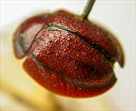
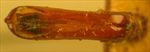
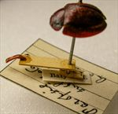
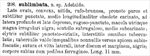

Click on images to enlarge
.jpg){kind=link}

Fig. 1. probable Paropsis sublimbata, Baly coll., BMNH
.jpg){kind=link}

Fig. 2. probable Paropsis sublimbata aedeagus, Baly coll., BMNH
.jpg){kind=link}

Fig. 3. probable Paropsis sublimbata, Baly coll., BMNH, with labels
{kind=link}

Fig. 4. Paropsis sublimbata, description
Name
Paropsis sublimbata Chapuis, 1877
Corresponds to
Ta74.
Diagnosis and Notes
Blackburn (1896) deals with P. sublimbata as part of his 'subgroup i' (i.e., those species with "strongly marked characters"). Within that group, he characterises it as:
AAA. Prosternum normal [i.e, sulcate down the middle and not unusually wide], but other characters exceptional, as follows:-;
BBB. The exceptional characters lie in the elytral epipleurae;
CC. Inner (horizontal) part of the epipleurae nearly reaches the apex as a distinct ledge;
DD. Basal ventral segment feebly punctulate;
EE. Elytra without any postbasal impression on disc.
The Baly collection specimen in the BMNH (Figs. 1-3), with its aedeagus dissected out, is clearly a specimen of Ta74. Chapuis' description is relative adequate to identify this species, and could apply to few, if any, other species of this size, though 11 mm would be just outside of the known size distribution of Ta74 (8.7-10.4 mm, n=31). His observation on the tubercles being very unequal ("tuberculis valde inæqualibus") likely refer to the verrucae being very different in size between the series, as they tend to be similar-sized within the series. The "distinct ledge" of the inner epipleurae referred to in Blackburn's key is very well developed in this species (and laeviventris), and is likely to indicate a close relationship between these species and T. latipes.
Type specimen
RBINS: Not examined.
The BMNH has a specimen from the Baly collection that is labelled as Paropsis sublimbata. It is this specimen that is shown in Figures 1-3.
Original description
Translation of original description (Figure 4) by ChatGPT, 04/2026:
Broadly ovate, convex, shining, reddish-brown. Pronotum sparsely and finely punctate, in the middle with an indistinct longitudinal keel, at the sides deeply and broadly depressed, there rugose-punctate, with on each side a large irregular black spot. Scutellum somewhat rugulose, in the middle somewhat carinate. Elytra finely punctate-striate, all the interstices tuberculate; the tubercles very unequal, some toward the apex somewhat darkened; the suture and a lateral band, between the disc and the margin, black. Body beneath with the legs ferruginous. Length 11 mm.
References
Chapuis, F. 1877, "Synopsis des espèces du genre Paropsis", Annales de la Société Entomologique de Belgique (Comptes-rendus), vol. 20, 67-101 (page 94).
Copyright © 2026. All rights reserved.